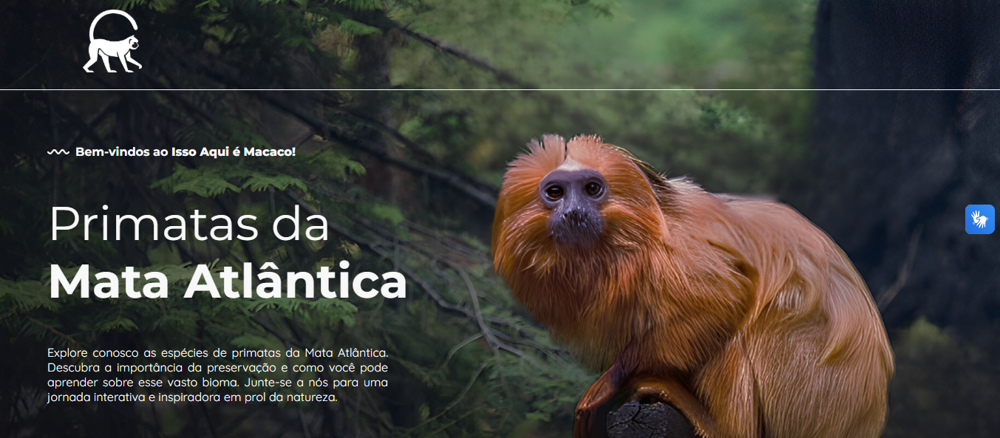

ConcluídoIsso aqui é macaco!
Aplicação web desenvolvida como Trabalho de Conclusão de Curso na ETEC, focada em divulgar informações interativas, espécies e dados de conservação sobre primatas. Projeto voltado para a conscientização ambiental através de uma interface intuitiva, responsiva e de navegação fluida.
HTML5
CSS3
JavaScript
PHP